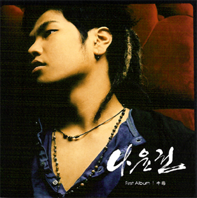

|

정규 1집 중독 (2004. 9. 9.)
- 약한 남자(Title)
- 중독 (영화 '연인' Title)
- Busy Lady
- 멈칫하던 순간
- 두 걸음 걸어요
- 어떡하죠
- 36.5도
- 동감
- My Girl
- Low Battery
- 남자가 여자를 사랑할 때
- Listen
- 내가 될 그날까지
- 나였으면
|
미니 1집 기대 (2005. 10. 27.)
- 기대
- 우리에게 일어날 수 있는 일
- Post it
- 슬픈 월
|
정규 2집 뒷모습 (2007. 9. 13.)
- 바람이 하는 말
- 뒷모습(Title)
- 행운
- 아무 것도 아닌 것도..
- Bellucia
- 그댄 아니잖아요
- It's allright
- 가인
- 키 작은 사랑(Always)
- 지워..미워..잊어
- 우리에게 일어날 수 있는 일
- 뒷모습(Inst.)
|
미니 2집 마주치다 (2009. 5. 12.)
- 낡은 편지
- 미행(Title)
- 커피한잔의 여유
- 심장소리
- 미행(Inst.)
|